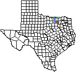
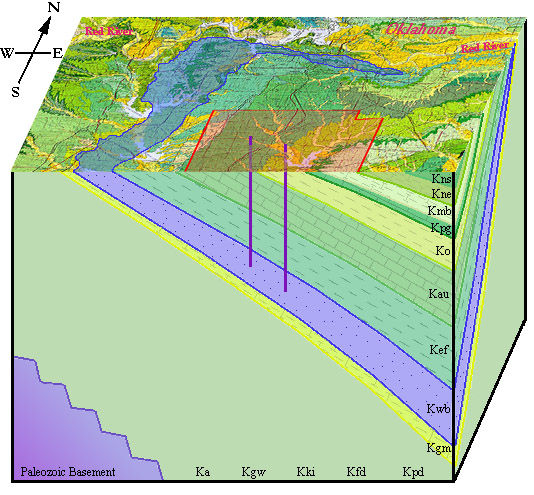

|
 Kne - Neylandville Marl Kmb - Marlbrook Marl Kpg - Pecan Gap Chalk Ko - Ozan Formation (clay) Kau - Austin Chalk Kef - Eagle Ford Formation (shale) Kwb - Woodbine Formation Kgm - Grayson Marl Kpd - Pawpaw Fm., Weno Limestone, Denton Clay (undifferentiated) Kfd - Fort Worth Limestone and Duck Creek Fm. Kki - Kiamichi Formation Kgw - Goodland Limestone and Walnut Clay (undivided) Ka - Antlers Sand |
 |